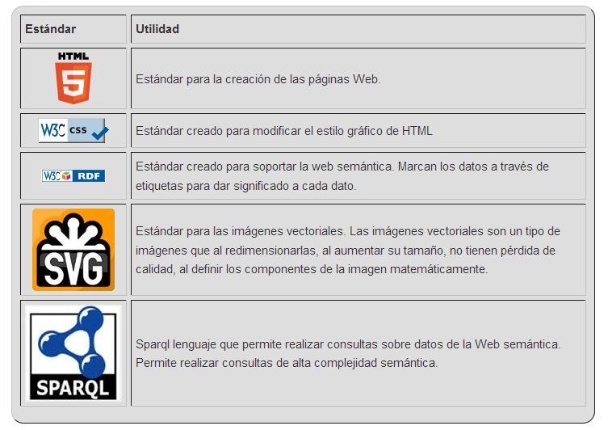

- CURSO OPEN DATA
- Unidad 1: Concepto de Open Data. Origen y ejemplos.
- Objetivos de la unidad.
- Esquema de contenidos de la unidad.
- Lección 1: Qué es Open Data y cuáles son sus objetivos.
- Lección 2: Derecho de acceso a la información.
- Lección 3: Iniciativas nacionales e internacionales.
- Lección 4: Fuentes de información. Conjuntos de datos de diversos organismos.
- Lección 5: Qué datos de la administración pueden ser útiles.
- Actividades.
- Preguntas de control.
- Resumen de la unidad.
- Unidad 2: Beneficios e importancia del Open Data.
- Objetivos de la unidad.
- Esquema de contenidos de la unidad.
- Lección 1: Por qué es necesario el Open Data: creando valor con los datos, reutilización de la información.
- Lección 2: Tomas de decisiones a partir del histórico de los datos.
- Lección 3: Data driven government.
- Lección 4: Buenas prácticas, el decálogo del Open Data.
- Lección 5: Explotación de la información: Visualización de información, aplicación de herramientas de Inteligencia artificial para la toma de decisiones.
- Lección 6: Aplicaciones, meteorología, niveles hídricos, Smart City, Periodismo de datos, etc.
- 1. Aplicaciones disponibles a partir de Open Data
- 2. Ejemplo de servicios de carburantes.
- 3. Ejemplo de aplicación de smart city, calidad del aire de Zaragoza.
- 4. Ejemplo de aplicación de smart city, calidad del agua de Zaragoza.
- 5. Ejemplo de periodismo de datos (1/2).
- 6. Ejemplo de periodismo de datos (2/2).
- Actividades.
- Preguntas de control.
- Resumen de la unidad.
- Unidad 3: Marco legal.
- Objetivos de la unidad.
- Esquema de contenidos de la unidad.
- Lección 1: Directivas Europeas.
- 1. Directiva 2003/98/CE, de 17 de noviembre de 2003, del Parlamento Europeo y del Consejo, relativa a la reutilización de la información del sector público.
- 2. Directiva 2013/37/UE del Parlamento Europeo y del Consejo, de 26 de junio de 2013, por la que se modifica la Directiva 2003/98/CE relativa a la reutilización de la información del sector público.
- 3. Otra normativa Europea.
- Lección 2: Legislación Nacional: Ley 37/2007 y Ley 19/2013.
- 1. Ley 37/2007, de 16 de noviembre, sobre reutilización de la información del sector público (RISP).
- 2. Ley 19/2013, de 9 de diciembre, de transparencia, acceso a la información pública y buen gobierno.
- 3. Real Decreto 4/2010, de 8 de enero, por el que se regula el Esquema Nacional de Interoperabilidad en el ámbito de la Administración Electrónica.
- 4. Otra normativa estatal que también afecta a Open Data (1/2).
- 5. Otra normativa estatal que también afecta a Open Data (2/2).
- Lección 3: Normativa autonómica.
- Lección 4: Licencia de los datos y aplicaciones.
- Actividades.
- Preguntas de control.
- Resumen de la unidad.
- Unidad 4: Aragón Open Data.
- Objetivos de la unidad.
- Esquema de contenidos de la unidad.
- Lección 1: Calidad de los datos.
- 1. Compromiso en la publicación de los datos.
- 2. Nivel de granularidad de los datos.
- 3. Datos de calidad (1/2).
- 4. Datos de calidad (2/2).
- 5. Qué problemas pueden causar tener datos de mala calidad.
- 6. Integridad entre distintas fuentes de datos.
- 7. Gestión de los errores en los datos, limpieza de datos (1/2).
- 8. Gestión de los errores en los datos, limpieza de datos (2/2).
- Lección 2: Estándares de formatos de datos.
- Lección 3: Cómo publicar información en Open Data: Estándares W3C, Web Semántica, modelo de datos, vocabulario, metadatos y formatos.
- Actividades.
- Preguntas de control.
- Resumen de la unidad.
- Unidad 5: Parte práctica Aragón Open Data.
- Objetivos de la unidad.
- Esquema de contenidos de la unidad.
- Lección 1: Tutorial sobre publicación de información en Aragón Open Data.
- 1. Conjunto de datos disponibles.
- 2. Transformación y consolidación de los datos.
- 3. Formatos y conversiones.
- 4. Acceso a la pizarra de administración.
- 5. Crear un nuevo conjunto de datos.
- 6. Temática y etiquetado.
- 7. Cobertura geográfica.
- 8. Cobertura temporal, idiomas y extras.
- 9. Licencias.
- 10. Ficheros de datos.
- Lección 2: Aragón Open Data. Parte práctica.
- Actividades.
- Preguntas de control.
- Resumen de la unidad.
1. W3C estándar Web.
El World Wide Web Consortium, abreviado W3C, es un consorcio internacional que crea, mantiene y soporta las recomendaciones y estándares que aseguran el funcionamiento de la Web (World Wide Web). Desempeñan la función de generar estándares y de asegurar la neutralidad de las tecnologías que se emplean en la Web
Entre otros muchos, W3C mantienen los estándares que aparecen en la tabla adjunta.
